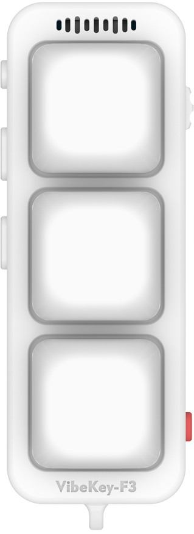

自定义快捷键
全键自由映射，单击、双击、长按都能独立改成任意组合。
自定义快捷键、语音输入、空中飞鼠、Agent 状态灯——四大核心功能集成在 71.5×21×28mm 的机身里。双模蓝牙 5.3 直连三台设备， 让大厂搜罗的「AI 潮涌入口」真正变成物理按键。

把键盘上「点一下」的动作，压缩成掌心大小的三个键。
全键自由映射，单击、双击、长按都能独立改成任意组合。
内置高灵敏麦克风，轻声说话实时转文字，免去打字。
姿态传感器感应，手腕轻转即可移动指针、滚轮与左右键。
3 色 LED 加 RGB，任务状态一眼掌握，AI 在忙什么你看得见。
把大厂搜罗的「AI 潮涌入口」直接做成物理按键。
随着「Vibe Coding」（氛围编程）概念兴起，AI 语音输入正逐步成为开发趋势。 VibeKey-F3 作为一款软 Vibe Coding 小工具，集自定义快捷键、语音输入、空中飞鼠、 Agent 状态指示灯于一身，让语音驱动代码和创作变得触手可及。
内置高灵敏麦克风，轻声说话也能清晰拾取，说完即转文字。
一键启动收音
轻声说话也能识别
说完即转文字
按下即可说，不挑输入法。
三个槽位按键独立配置存储，一台设备连三台机器。长按电源键即可切换当前槽位，每台设备一套按键方案，互不干扰。
首次无配对信息时默认开机为 ① 号槽（黄色闪烁），配对完成后默认为连接模式。
常规与手势模式并存，同一个键按出四种动作。可直接蓝牙改键，无需再插 USB。
KEY L1–L3、KEY C1–C3 均支持上述映射，摇一摇灵敏度三档可调。
* 无蓝牙功能的电脑需自备支持双模蓝牙且支持 HFP（语音通话协议）的接收器
VibeKey-F3 的网页上位机与固件资料均已公开，欢迎提 Issue 与 PR。
VibeKey-F3 固件、网页上位机与相关工具
master 切分支开发，提交 PR 并写清改动动机。
web/vibekey-F3_web_config 是网页上位机源码，tools/ 下含打包与发布脚本。
仓库遵循公开许可；如商用或二次分发，请先阅读仓库内的许可说明。
从通勤到深夜加班，为每种工作状态准备最顺手的输入。
手不离键盘就能指挥 AI 写代码。语音输入加空中飞鼠，让「写需求—改代码—点运行」三个动作一气呵成。
自定义快捷键 语音输入会议中想到什么就说什么，按一下语音键说完即上屏。空中飞鼠负责翻页，不必在键盘上盲找。
语音输入 空中飞鼠把常用指令映射到三个键上，配合空中飞鼠控制播放条，切场景、掐点、推流都跟得上手。
自定义快捷键 空中飞鼠长按电源键就能在三台设备间切换，每台各存一套按键方案。RGB 灯告诉你此刻连的是哪台。
Agent 状态灯 三槽位配置语音输入 · 空中鼠标 · 自定义快捷键 · Agent 状态灯
* 部分数据以实物为准
把「AI 潮涌入口」做成真正能按下的物理按键。
使用网页端配置需通过 USB 或蓝牙连接设备；固件升级仅支持 USB 连接。